Não há como chamar Dragon Ball Z de outra coisa além de fenômeno. O anime lançado originalmente em 1989 segue sendo uma das franquias mais populares e amadas de todo o mundo até hoje, com seu herói Goku sendo tão reconhecido quanto grandes ícones da cultura pop, como Mickey e Superman. E tudo isso graças ao carisma dos personagens, às batalhas épicas e ao excelente equilíbrio que o autor Akira Toriyama trouxe para essa história.
Escolher o primeiro episódio de Dragon Ball Z como um dos melhores é bastante simples: é nele que conhecemos o filho de Goku, Gohan. O pequeno saiyajin é fruto do relacionamento entre Goku e Chi-Chi e é introduzido no anime logo no início, o que indicava, a princípio, que ele dividiria o protagonismo com seu pai (embora isso não tenha ocorrido exatamente dessa forma).
Uma das maiores críticas a Dragon Ball Z é a frequência das mortes e ressurreições de seus personagens, mas quando essas mortes acontecem pela primeira vez, são sempre impactantes para os fãs. Um exemplo marcante é a primeira morte de Goku, no quinto episódio da série. Durante a luta contra seu irmão Raditz, Goku, com a ajuda de Piccolo, enfrenta um inimigo com força muito superior. Gohan também demonstra um vislumbre de seus poderes ao ver seu pai em perigo. Para derrotar Raditz, foi necessária uma estratégia arriscada: Goku se agarra a Raditz enquanto Piccolo o ataca, resultando na morte de ambos.
Para quem acha que Dragon Ball não tem drama e profundidade, esse episódio é uma prova em contrário. Após eliminarem Yamcha, Tenshinhan e Chaos, os saiyajins Nappa e Vegeta estavam prestes a matar Gohan, que ainda era uma criança sem controle total de seus poderes. Gohan, apesar de mostrar sinais de grande potencial, estava vulnerável e prestes a ser destruído por um ataque devastador de Nappa. A situação mudou quando Piccolo, em um ato heroico, salvou Gohan, sacrificando sua própria vida no processo. Esse momento ressaltou a profunda conexão entre Piccolo e Gohan, que ia muito além da relação de mestre e aluno; Piccolo havia treinado Gohan para enfrentar os saiyajins e demonstrou ser uma figura paternal para ele, talvez mais do que Goku. Com a morte de Piccolo, Kami-Sama também morreu, resultando no desaparecimento das Esferas do Dragão.
A saga de Freeza é a mais longa de Dragon Ball Z e introduz o maior número de inimigos da série. Durante esses episódios, vimos Vegeta, o primeiro grande antagonista dos guerreiros Z, mudar de lado e unir forças com os heróis da Terra para enfrentar o vilão. Após desempenhar um papel crucial na eliminação de vários capangas de Freeza, Vegeta enfrentou seu antigo chefe, que havia alcançado sua forma final e poderes quase inigualáveis. Apesar de acreditar que estava prestes a se tornar o lendário Super Saiyajin, Vegeta foi severamente derrotado por Freeza. Em sua última luta, além de sofrer uma derrota física, Vegeta teve seu orgulho profundamente ferido ao ver Goku superar seus poderes e se tornar a única esperança de vitória.Em seu leito de morte, Vegeta protagonizou uma das cenas mais emocionantes e dramáticas da série, implorando a Goku que vingasse seus pais e toda a raça dos saiyajins.
Após uma épica batalha contra Freeza e o lançamento da Genki Dama mais poderosa de todos os tempos, Goku parecia ter finalmente derrotado o vilão. No entanto, Freeza ressurge furioso e começa sua revanche. Primeiro, ele tenta atacar Goku, mas acerta um disparo em Piccolo, que impede a morte do guerreiro. Em seguida, Freeza controla o corpo de Kuririn e o explode sem piedade. A cena da morte de Kuririn enche Goku de uma raiva incomparável. Mesmo sem forças, ele consegue despertar seu poder de Super Saiyajin e se transforma no lendário guerreiro, o maior medo de Freeza.
Os episódios "entre-sagas" de Dragon Ball Z costumam ser mais lentos e de transição, mas o capítulo 120, intitulado "O Fim de Freeza", é uma notável exceção. Neste episódio, conhecemos Trunks do futuro, que derrota Freeza e seu pai, Rei Cold, com surpreendente facilidade. Além de revelar que Trunks é filho de Vegeta e Bulma, este episódio prepara o terreno para novos e poderosos inimigos: os androides criados pelo doutor Maki Gero. Trunks também desempenha um papel crucial ao informar a Goku sobre uma grave doença do coração que o matará antes que ele tenha a chance de enfrentar esses novos vilões. Para garantir a sobrevivência de Goku, Trunks lhe entrega um remédio para curá-lo.
Como mencionado, o interlúdio entre a saga de Freeza e a de Cell pode parecer um pouco lento, mas isso não significa que seja desprovido de valor. Dragon Ball Z conquistou o mundo não apenas com suas cenas de luta, mas também com seu bom humor. O episódio 125, "Uma Prova Muito Difícil para Goku", exemplifica isso perfeitamente. Neste episódio, vemos o guerreiro mais poderoso da Terra, o mesmo que voltou à vida para salvar o planeta, lutando para passar no teste de direção. Goku e Piccolo vão para a autoescola aprender a dirigir, em um episódio que não tem vilões nem ameaças, apenas a burocracia cotidiana. É um exemplo brilhante da capacidade de Akira Toriyama de combinar comédia com a trama de super seres, lembrando que Dragon Ball começou como um mangá humorístico.Além disso, o episódio levanta uma suspeita interessante entre os fãs: a relação entre Piccolo e Chi-Chi. Piccolo, que desempenhou um papel de figura paterna para Gohan, é mostrado usando roupas sugeridas por Chi-Chi, o que sugere que, após a morte de Goku, a vida seguiu seu curso de maneiras inesperadas.
]A luta contra Cell é frequentemente considerada a melhor de todo o anime, e isso se deve a uma saga muito bem construída. Cell, após absorver os Androides 17 e 18, alcança um poder quase inalcançável, tornando-se um dos vilões mais temidos da série. Apesar de sua imensa força, os androides absorvidos não eram verdadeiros vilões; tinham personalidades relativamente amistosas e não causaram o caos que Trunks havia previsto em sua visita anterior. Após um intenso treinamento de um dia na Sala do Templo, Goku e Gohan retornam muito mais fortes, prontos para enfrentar Cell em sua forma perfeita. Goku, embora reconheça que não está à altura do poder de Cell, demonstra uma confiança inabalável na vitória, o que deixa Gohan e os outros perplexos. Essa confiança se baseia no fato de que, durante o treinamento, Goku detectou o verdadeiro potencial de Gohan, que estava escondido sob a superfície. Com uma combinação de sorte e uma abordagem bastante ousada, Goku acreditava que seu filho poderia derrotar Cell se alcançasse seu máximo potencial. E assim aconteceu: enquanto Gohan estava com seus poderes no auge, Cell não foi páreo para ele. O desfecho acabou se desenrolando de uma forma um pouco diferente do que Goku havia previsto, mas a transformação de Gohan provou ser decisiva para a vitória.
Vegeta retorna à lista com sua segunda morte, que é tão dramática quanto a primeira. O príncipe dos saiyajins é um dos personagens mais complexos de Dragon Ball Z. Apesar de seu passado maligno, ele formou uma família, lutou pela Terra em vários momentos e, próximo ao final da série, demonstrou sentimentos genuínos tanto por seus entes queridos quanto por Kakaroto, seu principal rival, que se tornou seu melhor amigo. Neste episódio específico, Vegeta enfrenta Majin-Boo, um inimigo poderoso criado pelo mago Bibidi, e se vê em uma situação desesperadora devido à falta de poderes para derrotá-lo. Sem alternativas viáveis, a única solução que lhe resta é a autodestruição, que provocaria uma grande explosão capaz de despedaçar o monstro e impedir sua regeneração. No entanto, Vegeta enfrenta um grande dilema antes de seguir com seu plano. Antes de se sacrificar, Vegeta abraça seu filho, Trunks, em uma cena profundamente emocional, expressando seu amor e arrependimento. Esse momento tocante faz com que até mesmo Piccolo passe a respeitar Vegeta, não apenas pelo gesto, mas por ser a primeira vez que o príncipe dos saiyajins luta verdadeiramente pelos outros.
Na sequência do episódio anterior, há uma cena que é uma das mais marcantes de todo o anime e que certamente arrancou lágrimas dos fãs mais fervorosos. Durante a luta contra Majin-Boo, Vegeta finalmente reconhece a superioridade de Goku como guerreiro saiyajin. O príncipe dos saiyajins faz uma reflexão sobre o passado e o histórico dos dois, destacando que Kakaroto (Goku) nunca teve a intenção de matá-lo e que sempre superou seus próprios limites. Vegeta também lembra que Goku já o salvou em diversas ocasiões. Esse reconhecimento e a rendição à força e à bondade de Goku representam um momento de grande emoção e crescimento para o personagem, mostrando a profunda transformação e o respeito que Vegeta desenvolveu ao longo da série.
 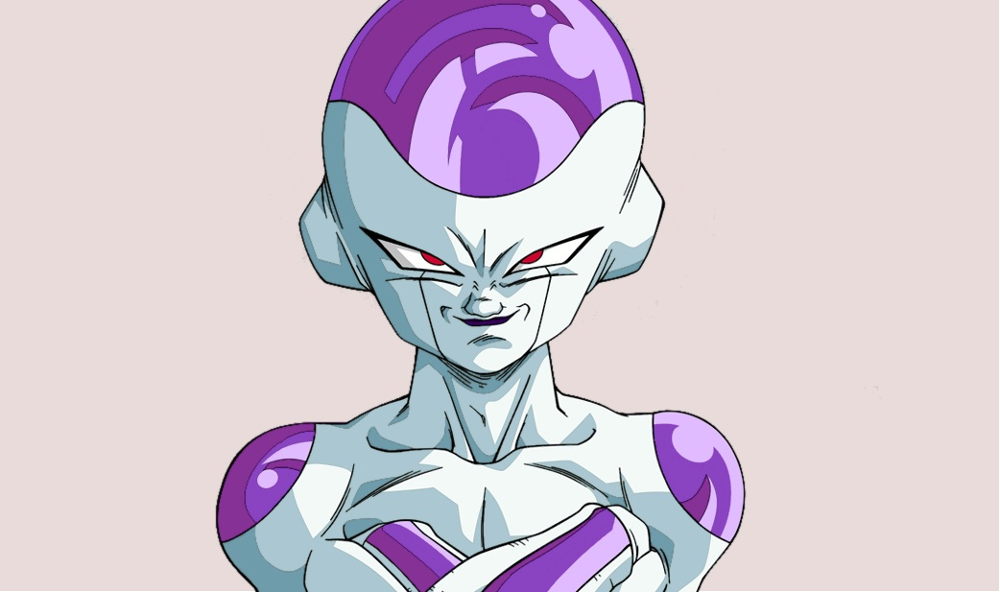
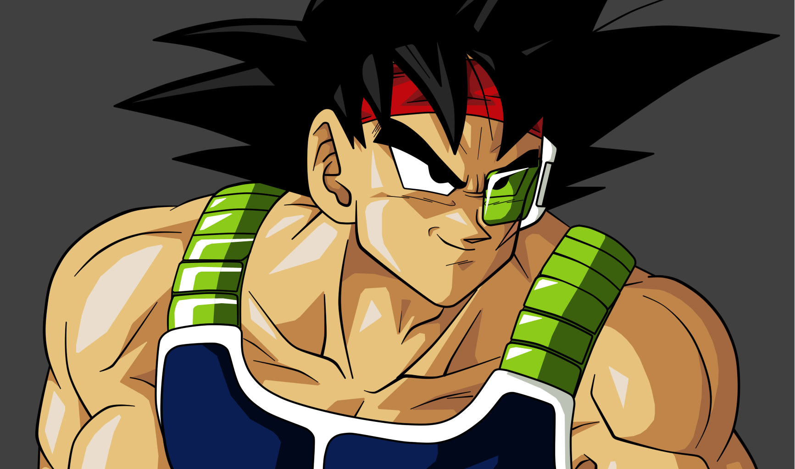
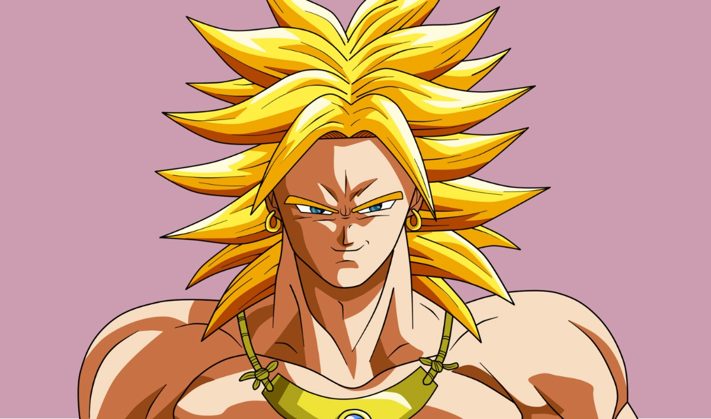
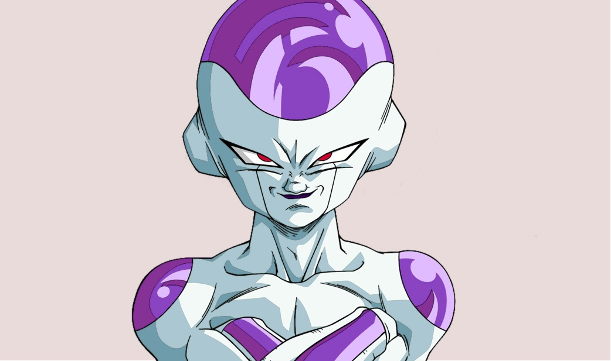
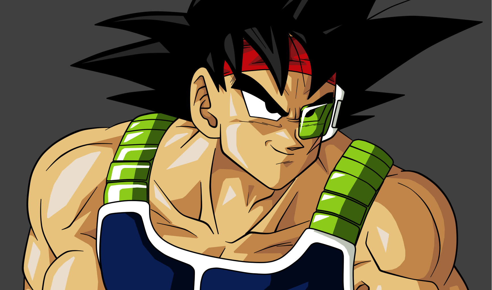
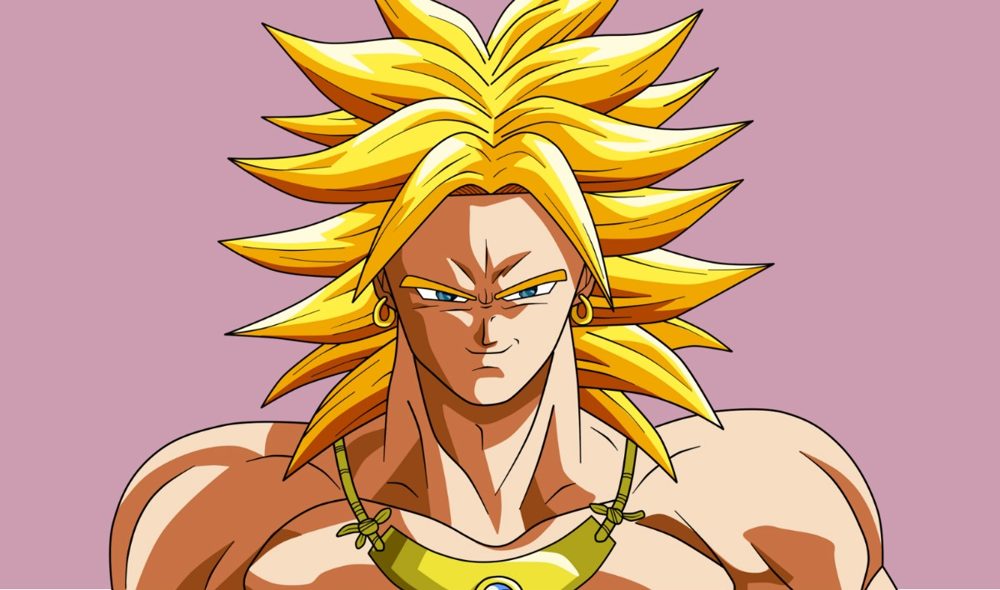
 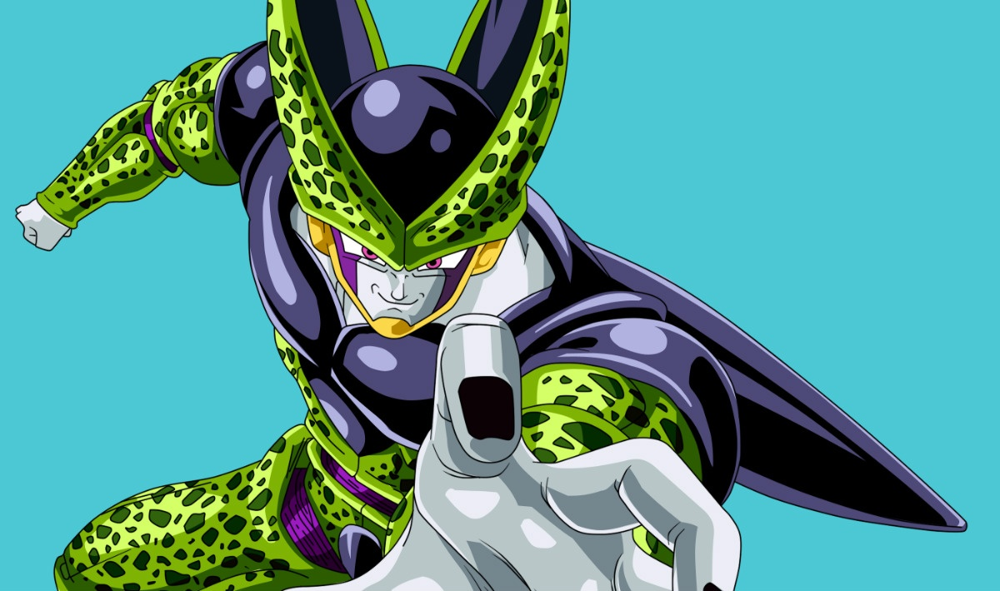
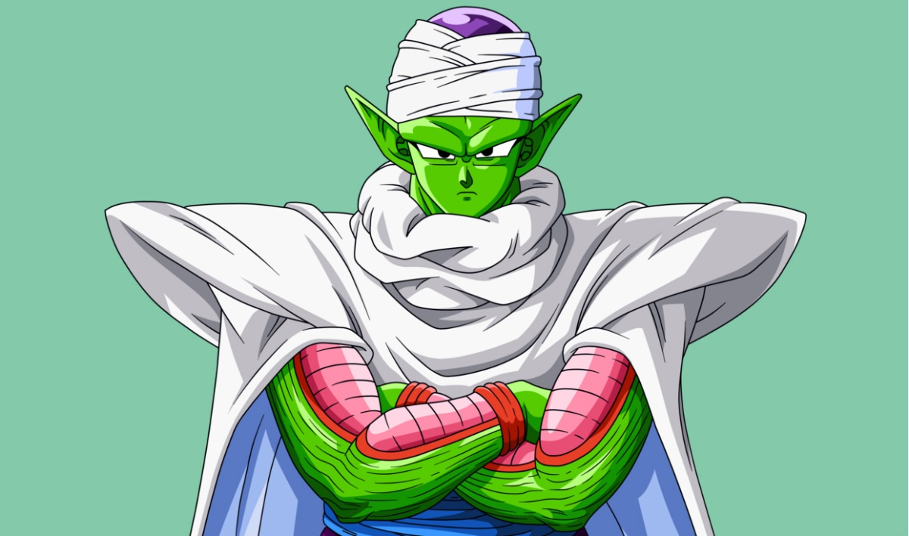
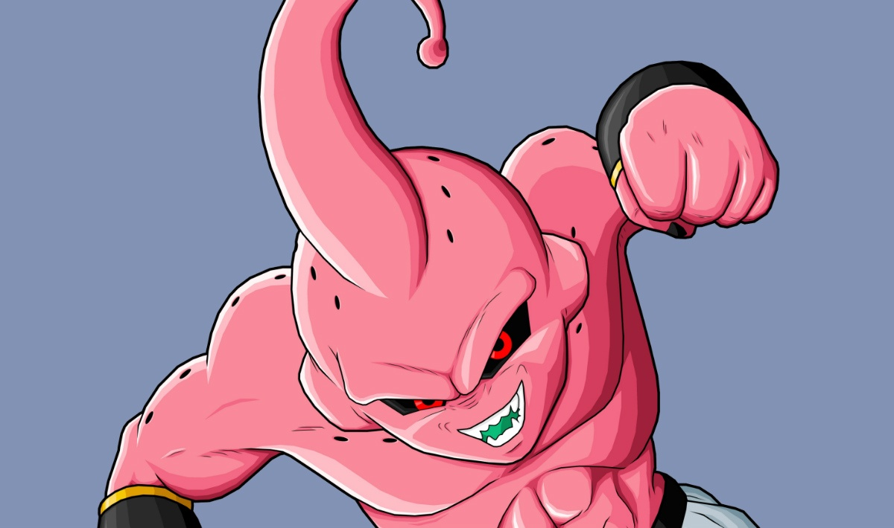
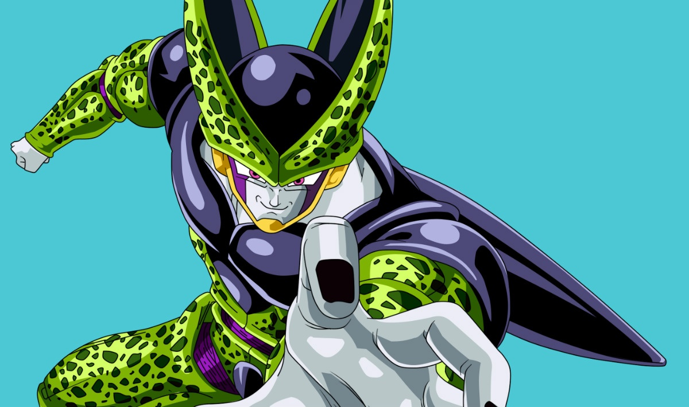
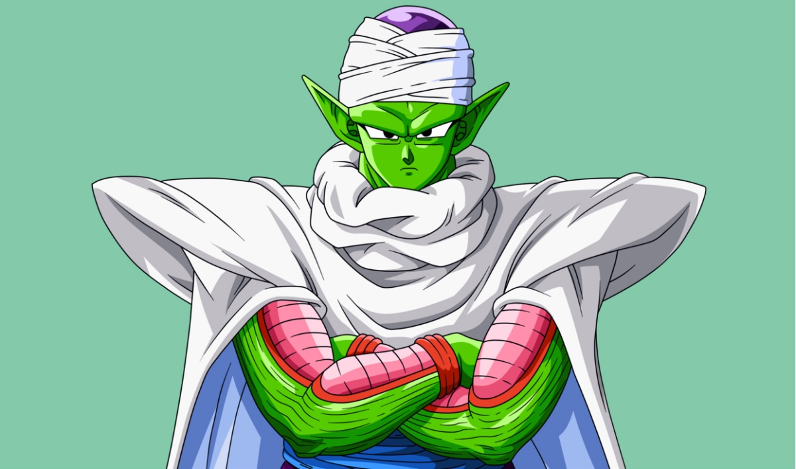
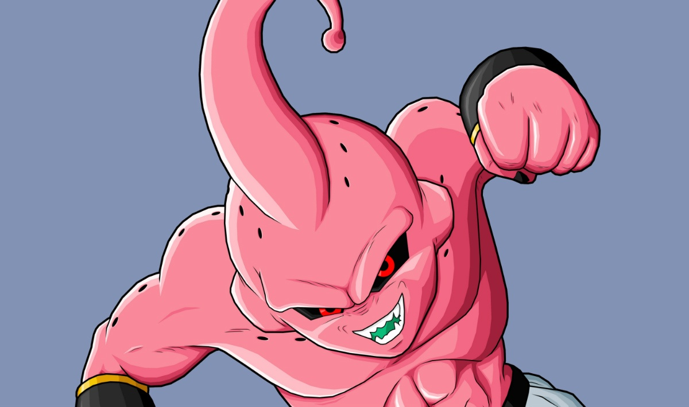